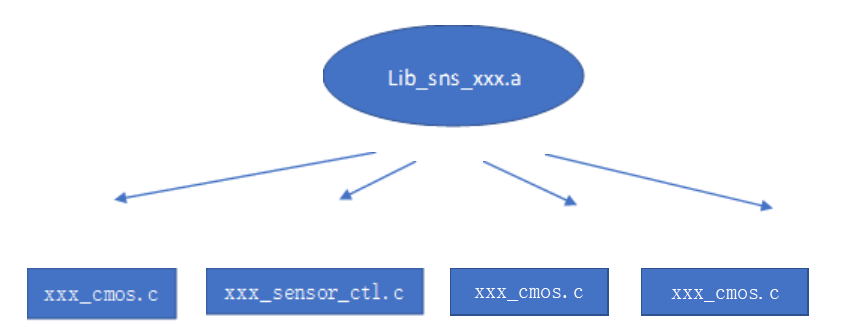
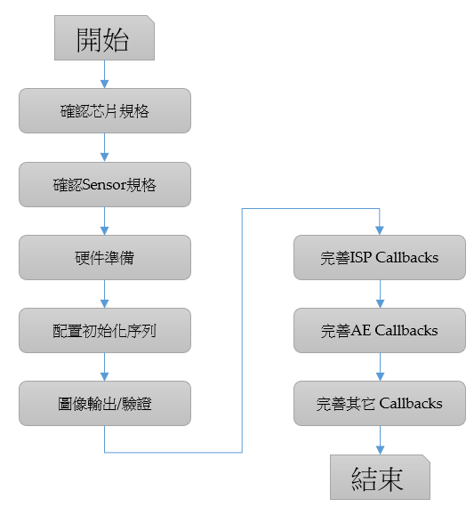

2. SensorDriverIntroduction¶
2.1. HardwareArchitecture¶

Datathe corresponding content：Sensor->PHYA -> PHYD -> MAC(CSI/sub-LVDS/TTL)->ISPthe corresponding contentCSI BDG。
Sensorthe corresponding contentlanethe corresponding content，PHYAthe corresponding content，thenthe corresponding contentPHYDthe corresponding contentpixelthe corresponding content，the corresponding contentMAC clk syncthe corresponding contentframeDatathe corresponding contentVIprocessthe corresponding contentISPthe corresponding contentprocess。
2.2. sensorthe corresponding content¶
Sensor the corresponding contentas followsFigure，the corresponding contentIncludes 4 the corresponding contentFile：xxx_cmos.c、xxx_sensor_ctl.c、xxx_cmos_param.h、xxx_cmos_ex.h。
the corresponding contentaliosthe corresponding content，sensorthe corresponding content mars_alios/components/cvi_mmf_sdk/cvi_sensor/ the corresponding content
{kind=link}

xxx_cmos.c contain Sensor Driverthe corresponding contentmainlyFunctionfunction，the corresponding contentSensor Relatedthe corresponding content AEControlRelatedfunction、ISP defaultConfiguration、Sensor startmodeselectfunction、Sensor the corresponding content AE、AWB、ISP the corresponding contentfunction、SnsxxxObj；
xxx_sensor_ctl.c mainlycontain Sensor the corresponding contentInitializethe corresponding content、the corresponding contentInterfaceInitialize、the corresponding contentfunctionthe corresponding content；
xxx_cmos_ex.h Yesthe corresponding content、Resolution、modeTypethe corresponding contentDisclaimerthe corresponding contentFile。
xxx_cmos_param.h mainlyYessensorthe corresponding contentParameter， mipithe corresponding contentParameter， isp noise profilethe corresponding contentConfiguration。
2.3. tuningflow¶
{kind=link}
